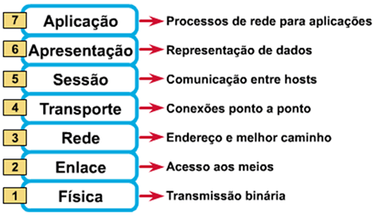

Redes de Computadores
Protocolos e serviços de rede
Padronizar a forma das pessoas se comunicarem pode garantir que as informações sejam passadas e compreendidas de forma correta. Os processos necessários para a padronização podem variar conforme o tipo de aplicação ou entidade que fará os estudos e análises.
ISO (Internacional Organizantion for Standardization) – organização não governamental responsável pela padronização, sendo dividida em:
- ANSI (American National Standards Institute)
- ABNT (Associação Brasileira de Normas Técnicas)
- ANFOR (Associação Francesa)
- DIN (Associação Alemã)
EIA (Eletronic Industries Association) – grupo que visa a padronizações das transmissões elétricas.
IEEE (Institute of Eletrical and Eletronics Engineers) – a maior organização internacional de desenvolvimento e padronização nas áreas de engenharia elétrica e computação.
ITU-T (Telecommunication Standardization Sector) – entidade responsável pela padronização dos assuntos relacionados a telecomunicações.
Segundo Tanenbaum (1997), o desejo da ISO era desenvolver um modelo para interconexão de sistemas abertos. Para isso, foi desenhado um modelo em sete camadas que deveriam atender os seguintes requisitos:
-
A função das camadas deve ser escolhida em razão dos protocolos que foram padronizados
-
Cada camada deve executar a função a qual foi destinada
-
Os limites entre as camadas devem ser escolhidos de forma que minimize os esforços ao fluxo das mensagens pelas interfaces
-
O número de camadas deve ser do tamanho suficiente para alocar todas as funcionalidades possíveis nas redes
Segundo Tanenbaum (1997), o modelo de referência OSI efetua todos os processos necessários para que ocorra a transmissão de dados, fazendo com que as camadas (ou layers) nele existentes efetuem a divisão dos processos lógicos.
Dessa forma, a ISO desenvolveu o modelo de referência OSI (Open Systems Interconnection – Sistemas Abertos de Conexão), que foi um marco para o desenvolvimento dos protocolos de comunicação que são utilizados nos serviços consumidos diariamente pela internet. A arquitetura do modelo é a seguinte:
A partir de 1984, os fabricantes de hardwares e desenvolvedores de softwares entenderam que o modelo proposto em camadas tinha como intuito permitir a interoperabilidade entre equipamentos de diferentes origens, o que poderia dar uma vantagem competitiva no mercado, abrindo espaço para parcerias e novos desenvolvimentos.
O Modelo de Referência ISO/OSI
Hierarquia e interfaces dos protocolos nos serviços de redes
Para isso, o mecanismo utilizado faz com que a camada “n” de um dispositivo se comunique com a camada “n” de outro dispositivo. Basicamente, o protocolo efetua a “negociação” entre as partes para que seja provida a comunicação, conforme pode ser observado na figura a seguir:
Camadas e Interfaces
Quando os dados são transferidos, cada camada processa o seu serviço respectivo. Para que isso ocorra, a cada par de camadas existe uma interface responsável por definir as operações e os serviços que a camada inferior tem que encaminhar à layer superior.
Agora conheça os protocolos definidos por Tanenbaum:
HTTP: trata-se de um protocolo utilizado para acessar conteúdo web na rede mundial de computadores. Permite que ocorra a transferência ponto a ponto entre clientes e servidores de serviços do tipo elástico e streaming multimídia.
SMTP: é a sigla para Simple Mail Transfer Protocol (Protocolo Simples de Transferência de E-mail). É o protocolo utilizado para efetuar o envio e recebimento de e-mail de um servidor a outro.
SSH (Secure SHell): utilizado para efetuar acesso remoto em outro dispositivo, por meio de um terminal, como o prompt de comando do DOS. A grande diferença das outras técnicas (Telnet e RSH) de acesso remoto está na segurança. Ao fazer um acesso remoto em um dispositivo, a transmissão de dados recebe uma criptografia que pode variar conforme o algoritmo de encriptação das mensagens, garantindo assim a integridade do que é compartilhado.
RTP: é o protocolo de transporte utilizado na camada de aplicação para prover streaming de áudio e vídeo. A sua sigla significa Real-Time Transfer Protocol, ou seja: protocolo de transferência em tempo real.
SIP (Session Initiation Protocol): apesar deste protocolo não pertencer à camada de aplicação e sim à de sessão, vale ressaltar seu grau de importância para os serviços multimídia. Este protocolo é responsável pela criação, modificação e finalização de sessões de transferência de arquivos de serviços multimídia.
POP3: essa expressão pode ser traduzida como protocolo de correio (Post Office Protocol), já disponível em sua terceira versão. Ele permite que o usuário descarregue as mensagens que estejam localizadas em um servidor de e-mail em seu dispositivo. Essa ferramenta permite o recebimento das mensagens, mas não o envio.
IMAP: este protocolo, assim como ocorre com o POP3, sincroniza as mensagens que estão alocadas em um servidor de e-mail. Entretanto, o IMAP se mantém conectado, a fim de sincronizar, em tempo real, as mensagens recebidas.
NTP: sua sigla significa Network Time Protocol (Protocolo de Tempo de Redes). Ele tem como função sincronizar os relógios dos servidores, roteadores e computadores das redes.
A hierarquia dos domínios é dividida em três categorias
-
Domínio Genérico: São definidos os registros conforme o segmento do site, podendo ser: .com, .net, .org, .edu, .gov, entre outros.
-
Domínio de Países: É utilizada a abreviatura com dois caracteres para identificar em qual país o domínio foi registrado, podendo ser: .br (Brasil), .us (Estados Unidos), .ar (Argentina), entre outros.
-
Domínio Reverso: Faz o processo reverso a consulta ao servidor DNS. Quando um servidor recebe uma solicitação, é feita uma consulta em sua “tabela”, que por sua vez encaminha o pedido do cliente ao servidor relacionado à URL digitada pelo usuário, sendo utilizado o endereço IP.
O Protocolo TCP/IP
Filippetti (2008) afirma que o padrão TCP/IP foi desenvolvido pelo DOD (Departamento de Defesa dos EUA) para garantir a integridade das mensagens enviadas em caso de guerra. Isso é compreensível, pois, em razão do envolvimento em diversos conflitos ao longo dos tempos, o exército necessitou de técnicas relacionadas à comunicação.
A arquitetura do protocolo TCP/IP foi desenvolvida em quatro camadas, e um conjunto de processos – ou aplicações – e utilizado para prover diversos serviços. Para compreender suas camadas, observe a imagem ao lado, que compara o modelo de referência OSI e o protocolo TCP/IP:
O roteador forma tabelas lógicas dos equipamentos disponíveis nas redes, como: roteador, switch, computadores, dispositivos móveis, impressoras IP e câmeras IP. Para auxiliar nesse processo é utilizado um mecanismo de descoberta de dispositivos “vizinhos”, que é efetuado por roteadores e switches por meio dos protocolos de comunicação:

Para isso podemos definir a função de cada uma das camadas do protocolo TCP/IP como:
Camada de Aplicação (Application Layer): nesta camada define-se como os programas vão se comunicar com as diversas aplicações disponíveis nas redes. Ainda é de responsabilidade desta camada efetuar o gerenciamento da interface pela qual o usuário vai interagir com a aplicação.
Camada de Transporte (Host-to-host Layer): é idêntica à camada de transporte do modelo de referência OSI, ou seja, responsável por prover, gerenciar e encerrar uma conexão ponto a ponto. Ao efetuar o gerenciamento da conexão, visa-se garantir a integridade dos dados pelo sequenciamento dos pacotes segmentados para efetuar o envio/recebimento das mensagens.
Camada de Rede (Internet Layer): tem o mesmo objetivo da camada de rede do modelo de referência OSI, sendo responsável por definir o endereçamento dos dispositivos por meio do IP e garantir o roteamento dos pacotes nas redes.
Camada de Acesso à Rede (Network Access Layer): desempenha a mesma função das camadas de enlace e física do modelo de referência OSI. Efetua o monitoramento do tráfego e analisa o endereçamento de hardware antes da transmissão pelo meio físico.
Podemos destacar algumas semelhanças entre o modelo OSI e o protocolo TCP/IP:
-
- Divisão em camadas;
-
- As camadas de transporte e rede são equivalentes;
-
- A comutação de pacotes é definida no modelo e efetuada no protocolo;
-
- Os profissionais de redes necessitam conhecer ambos.